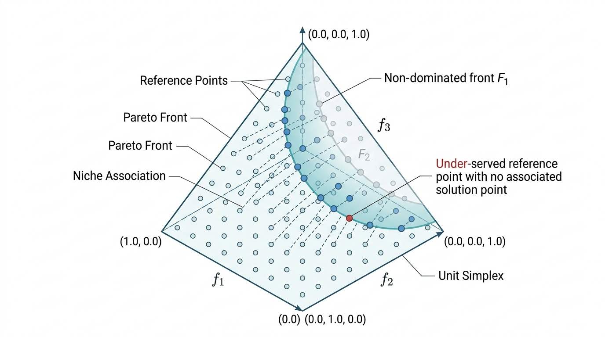

Bayesian optimization builds a surrogate and queries it strategically, but it struggles with high-dimensional spaces and problems with many conflicting objectives. Evolutionary algorithms take a different approach: maintain a population of candidate solutions and iteratively select, recombine, and mutate them. Covariance Matrix Adaptation Evolution Strategy (CMA-ES) applies this idea to continuous single-objective problems with remarkable efficiency. Non-dominated Sorting Genetic Algorithm III (NSGA-III) extends evolutionary selection to handle many objectives simultaneously by maintaining a diverse set of solutions along the Pareto frontier. This section covers both, with emphasis on the mathematical structures that make them work.
1. Evolutionary Optimization: Core Concepts
In 2006, NASA launched a satellite antenna that looked like a crumpled paper clip, yet it reportedly outperformed the hand-designed baseline by 10 dB: the shape had been bred, not engineered, by an evolutionary algorithm that tested thousands of candidate geometries across dozens of generations. The core idea behind that process is simple: maintain a population of \(\lambda\) candidate solutions \(\{\mathbf{x}_1, \ldots, \mathbf{x}_\lambda\} \subset \mathbb{R}^d\) and, each generation, apply three operations:
An evolutionary algorithm maintains a population of candidate solutions and iteratively improves them through three biologically inspired operators: selection (keeping the best), recombination (mixing traits from good candidates), and mutation (random perturbation). It requires no gradient information. It can optimize over discontinuous, noisy, or combinatorial landscapes where gradient-based methods fail. Each generation, selection pressure concentrates the population around promising regions: candidates with higher fitness contribute more offspring, while mutation prevents premature convergence. Prefer evolutionary algorithms over gradient descent when the objective is non-differentiable, black-box, or multimodal. Prefer Bayesian optimization when evaluations are expensive (fewer than a few hundred) and the search space is low-dimensional (\(d < 20\)).
- Selection: choose the best \(\mu\) individuals from the population based on their fitness \(f(\mathbf{x}_i)\).
- Recombination: combine selected individuals to produce new candidates (e.g., weighted averaging for continuous spaces, crossover for combinatorial spaces).
- Mutation: perturb new candidates to explore the neighborhood (e.g., adding Gaussian noise).
The key design question is how to mutate: the distribution of perturbations determines the algorithm's ability to navigate rugged landscapes. Isotropic Gaussian noise works poorly when the objective's sensitivity varies across dimensions or when dimensions are correlated. CMA-ES solves this by adapting a full covariance matrix to the local geometry of the fitness landscape. In short: Evolution does not need gradients; it only needs a population, a fitness ranking, and a rule for reshaping its search distribution to match the terrain it discovers.
Figure 45.4 illustrates the CMA-ES generation cycle, showing how sampling, evaluation, selection, and adaptation form a closed loop that progressively reshapes the search distribution.
2. CMA-ES: Covariance Matrix Adaptation
When a pharmaceutical company optimizes a drug formulation across 200 interacting excipient concentrations, isotropic random search wastes nearly every evaluation probing directions the landscape does not care about. CMA-ES was designed precisely for this scenario: it learns the local shape of the objective on the fly, concentrating search effort where it matters most.
The Covariance Matrix Adaptation Evolution Strategy (CMA-ES) maintains a multivariate Gaussian search distribution \(\mathcal{N}(\mathbf{m}, \sigma^2 \mathbf{C})\), where \(\mathbf{m} \in \mathbb{R}^d\) is the distribution mean (current best estimate), \(\sigma > 0\) is the global step size, and \(\mathbf{C} \in \mathbb{R}^{d \times d}\) is the covariance matrix that encodes correlations between dimensions. Each generation:
- Sample \(\lambda\) offspring: \(\mathbf{x}_i = \mathbf{m} + \sigma \mathcal{N}(\mathbf{0}, \mathbf{C})\) for \(i = 1, \ldots, \lambda\).
- Evaluate fitness \(f(\mathbf{x}_i)\) for each offspring.
- Select the best \(\mu\) offspring and update \(\mathbf{m}\) as their weighted average.
- Update \(\mathbf{C}\) to align with the directions that produced the best offspring.
- Update \(\sigma\) via cumulative step-size adaptation (CSA), which tracks a "path" of consecutive mean updates: if successive steps point in similar directions, the path lengthens and \(\sigma\) increases to take bolder steps; if they cancel out, the path shortens and \(\sigma\) shrinks to search more locally.
Mental Model
Think of CMA-ES as a flashlight beam searching a dark landscape for the lowest valley. At first, the beam is a perfect circle (isotropic Gaussian), illuminating equally in all directions. As you observe that the valley runs diagonally, you reshape the beam into an elongated ellipse aligned with the valley (covariance matrix adaptation), and you adjust the beam's width based on whether recent steps have been productive (step-size adaptation). If steps keep succeeding, you widen the beam to move faster; if they stall, you narrow it to search more carefully. The covariance matrix is the shape of that ellipse, the step size is its overall width, and each generation tilts and stretches the ellipse to match the terrain it has discovered so far.
The deep insight behind CMA-ES is that it performs natural gradient descent on the expected fitness under the search distribution. Let \(\theta = (\mathbf{m}, \mathbf{C})\) parameterize the search distribution \(\pi_\theta(\mathbf{x}) = \mathcal{N}(\mathbf{x} \mid \mathbf{m}, \sigma^2 \mathbf{C})\). The objective is to maximize:
$$J(\theta) = \mathbb{E}_{\mathbf{x} \sim \pi_\theta}[f(\mathbf{x})]$$The natural gradient replaces the standard gradient with \(\tilde{\nabla}_\theta J = \mathbf{F}^{-1} \nabla_\theta J\), where \(\mathbf{F}\) is the Fisher information matrix of \(\pi_\theta\), where the Fisher information matrix measures how sensitive the distribution's log-likelihood is to changes in its parameters (intuitively, it captures the "curvature" of the parameter space, making the update invariant to how we choose to parameterize the distribution). This makes the update invariant to reparameterization of \(\theta\).
For a Gaussian distribution, the Fisher information with respect to the mean \(\mathbf{m}\) is \(\mathbf{F}_m = \mathbf{C}^{-1}\), so the natural gradient step for the mean is:
$$\mathbf{m} \leftarrow \mathbf{m} + \eta\, \mathbf{C}\, \nabla_{\mathbf{m}} J = \mathbf{m} + \eta \sum_{i=1}^\mu w_i (\mathbf{x}_{i:\lambda} - \mathbf{m})$$where \(\mathbf{x}_{i:\lambda}\) is the \(i\)-th best offspring and \(w_i\) are rank-based weights (weights determined by each offspring's rank in the sorted fitness ordering rather than by its raw fitness value, making the update invariant to monotone transformations of the objective). The covariance update follows the natural gradient with respect to \(\mathbf{C}\), which in the rank-\(\mu\) update form becomes:
$$\mathbf{C} \leftarrow (1 - c_\mu)\,\mathbf{C} + c_\mu \sum_{i=1}^\mu w_i\, \frac{(\mathbf{x}_{i:\lambda} - \mathbf{m})(\mathbf{x}_{i:\lambda} - \mathbf{m})^T}{\sigma^2}$$This means CMA-ES implicitly performs second-order optimization: the covariance matrix approximates the inverse Hessian, just as in quasi-Newton methods (a family of gradient-based optimizers, such as BFGS, that approximate second-order curvature information without computing the full Hessian matrix), but without ever computing gradients. The invariance to affine transformations of the search space follows directly from the natural gradient formulation.
The following listing implements a minimal CMA-ES:
import numpy as np
class SimpleCMAES:
"""Minimal CMA-ES implementation for continuous optimization.
Parameters
----------
x0 : array of shape (d,)
Initial mean of the search distribution.
sigma0 : float
Initial step size.
pop_size : int or None
Population size (default: 4 + floor(3 * ln(d))).
"""
def __init__(self, x0: np.ndarray, sigma0: float = 0.5, pop_size: int = None):
self.d = len(x0)
self.mean = np.array(x0, dtype=float)
self.sigma = sigma0
# Population sizes
self.lam = pop_size or 4 + int(3 * np.log(self.d))
self.mu = self.lam // 2
# Recombination weights (log-linear)
raw_weights = np.log(self.mu + 0.5) - np.log(np.arange(1, self.mu + 1))
self.weights = raw_weights / raw_weights.sum()
self.mu_eff = 1.0 / np.sum(self.weights**2)
# Covariance matrix and evolution paths
self.C = np.eye(self.d)
self.p_sigma = np.zeros(self.d) # Step-size evolution path
self.p_c = np.zeros(self.d) # Covariance evolution path
# Learning rates
self.c_sigma = (self.mu_eff + 2) / (self.d + self.mu_eff + 5)
self.c_c = (4 + self.mu_eff / self.d) / (self.d + 4 + 2 * self.mu_eff / self.d)
self.c1 = 2 / ((self.d + 1.3)**2 + self.mu_eff)
self.c_mu = min(
1 - self.c1,
2 * (self.mu_eff - 2 + 1 / self.mu_eff) / ((self.d + 2)**2 + self.mu_eff),
)
self.d_sigma = 1 + 2 * max(0, np.sqrt((self.mu_eff - 1) / (self.d + 1)) - 1) + self.c_sigma
self.chi_n = np.sqrt(self.d) * (1 - 1 / (4 * self.d) + 1 / (21 * self.d**2))
self.generation = 0
def ask(self) -> np.ndarray:
"""Sample a new population from the current search distribution."""
# Eigendecompose C for sampling
eigenvalues, eigenvectors = np.linalg.eigh(self.C)
eigenvalues = np.maximum(eigenvalues, 1e-20)
sqrt_C = eigenvectors @ np.diag(np.sqrt(eigenvalues)) @ eigenvectors.T
z = np.random.randn(self.lam, self.d)
self._z = z # Store for update
return self.mean + self.sigma * (z @ sqrt_C.T)
def tell(self, solutions: np.ndarray, fitnesses: np.ndarray):
"""Update the search distribution based on evaluated fitness values.
Parameters
----------
solutions : array of shape (lam, d)
fitnesses : array of shape (lam,)
Fitness values (will be MINIMIZED; negate for maximization).
"""
# Sort by fitness (ascending = minimization)
order = np.argsort(fitnesses)
selected = solutions[order[:self.mu]]
# Update mean
old_mean = self.mean.copy()
self.mean = self.weights @ selected
# Eigendecompose for inverse sqrt
eigenvalues, eigenvectors = np.linalg.eigh(self.C)
eigenvalues = np.maximum(eigenvalues, 1e-20)
inv_sqrt_C = eigenvectors @ np.diag(1.0 / np.sqrt(eigenvalues)) @ eigenvectors.T
# Update evolution path for step size
self.p_sigma = (
(1 - self.c_sigma) * self.p_sigma
+ np.sqrt(self.c_sigma * (2 - self.c_sigma) * self.mu_eff)
* inv_sqrt_C @ (self.mean - old_mean) / self.sigma
)
# Update evolution path for covariance
h_sigma = (
np.linalg.norm(self.p_sigma)
/ np.sqrt(1 - (1 - self.c_sigma)**(2 * (self.generation + 1)))
< (1.4 + 2 / (self.d + 1)) * self.chi_n
)
self.p_c = (
(1 - self.c_c) * self.p_c
+ h_sigma * np.sqrt(self.c_c * (2 - self.c_c) * self.mu_eff)
* (self.mean - old_mean) / self.sigma
)
# Rank-mu update of covariance matrix
diffs = (selected - old_mean) / self.sigma
rank_mu = sum(w * np.outer(d, d) for w, d in zip(self.weights, diffs))
self.C = (
(1 - self.c1 - self.c_mu) * self.C
+ self.c1 * np.outer(self.p_c, self.p_c)
+ self.c_mu * rank_mu
)
# Update step size
self.sigma *= np.exp(
(self.c_sigma / self.d_sigma) * (np.linalg.norm(self.p_sigma) / self.chi_n - 1)
)
self.generation += 1The reference CMA-ES implementation by Nikolaus Hansen reduces the above to:
import cma
es = cma.CMAEvolutionStrategy(x0=[0.5] * 10, sigma0=0.3)
while not es.stop():
solutions = es.ask()
es.tell(solutions, [objective(x) for x in solutions])
result = es.result
print(f"Best: {result.fbest:.6f} at {result.xbest}")
The cma package handles boundary constraints, restarts, diagonal
acceleration for large \(d\), and convergence diagnostics. It reduces approximately
90 lines to 6 lines and adds features (restart strategies, constraint handling,
logging) that would require hundreds more lines to implement correctly.
Step-Through: One Generation of CMA-ES in 2D
Trace a single CMA-ES generation on a 2D problem with population size \(\lambda = 4\) and parent count \(\mu = 2\).
Setup: Mean \(\mathbf{m} = (0, 0)\), step size \(\sigma = 1.0\), covariance \(\mathbf{C} = \mathbf{I}_2\) (identity). Objective: minimize \(f(x_1, x_2) = x_1^2 + 10\,x_2^2\) (a stretched ellipsoid).
Step 1 (Sample): Draw 4 offspring from \(\mathcal{N}(\mathbf{m}, \sigma^2 \mathbf{C})\). Suppose we get \(\mathbf{x}_1 = (0.8, -0.3)\), \(\mathbf{x}_2 = (-0.5, 1.2)\), \(\mathbf{x}_3 = (1.1, 0.1)\), \(\mathbf{x}_4 = (-0.2, -0.9)\).
Step 2 (Evaluate): \(f(\mathbf{x}_1) = 0.64 + 0.90 = 1.54\), \(f(\mathbf{x}_2) = 0.25 + 14.40 = 14.65\), \(f(\mathbf{x}_3) = 1.21 + 0.10 = 1.31\), \(f(\mathbf{x}_4) = 0.04 + 8.10 = 8.14\).
Step 3 (Select and update mean): Best \(\mu = 2\) are \(\mathbf{x}_3\) (1.31) and \(\mathbf{x}_1\) (1.54). With equal weights \(w_1 = w_2 = 0.5\): \(\mathbf{m}_{\text{new}} = 0.5 \cdot (1.1, 0.1) + 0.5 \cdot (0.8, -0.3) = (0.95, -0.10)\). The mean has moved toward the \(x_1\)-axis, where the objective is flatter.
Step 4 (Update covariance): The selected displacements are \((1.1, 0.1)\) and \((0.8, -0.3)\). Their outer products average to a matrix with large \(C_{11}\) and small \(C_{22}\), teaching CMA-ES that the \(x_1\) direction is safe to explore widely while \(x_2\) should be searched more cautiously. After a few more generations, \(\mathbf{C}\) will become roughly \(\text{diag}(10, 1)\), matching the inverse curvature of the objective.
3. Multi-Objective Optimization: Pareto Dominance
CMA-ES excels at finding a single best solution, but scientific design problems rarely reduce to a single number worth optimizing.
Most discovery problems involve multiple objectives. A drug candidate has efficacy \(f_1\), toxicity \(f_2\) (to minimize), and synthetic accessibility \(f_3\) (to maximize). No single candidate simultaneously optimizes all three. Instead, we seek the set of Pareto-optimal solutions (where a solution is Pareto-optimal if no other feasible solution can improve any one objective without worsening at least one other): candidates where improving one objective necessarily worsens another.
Multi-objective optimization does not produce a single answer. It produces a set of answers (the Pareto front) that represents the achievable trade-offs. The scientist, not the algorithm, decides which trade-off to accept. This is why multi-objective methods are so natural for discovery: they map the landscape of what is possible, leaving the value judgment to domain expertise.
Formally, for objectives \(f_1, \ldots, f_m\) (all to be maximized), a solution \(\mathbf{x}\) dominates \(\mathbf{x}'\) (written \(\mathbf{x} \succ \mathbf{x}'\)) if:
$$\forall i: f_i(\mathbf{x}) \geq f_i(\mathbf{x}') \quad \text{and} \quad \exists j: f_j(\mathbf{x}) > f_j(\mathbf{x}')$$The Pareto front \(\mathcal{P}^*\) is the set of all non-dominated solutions. In objective space, the Pareto front forms a surface (a curve for \(m=2\), a surface for \(m=3\), a hypersurface for \(m > 3\)) that represents the boundary of what is simultaneously achievable.
Common Misconception
A frequent misunderstanding is that solutions on the Pareto front are "compromises" or "middle-ground" options that sacrifice performance on every objective to achieve balance. This is incorrect: every Pareto-optimal solution is fully optimal in the sense that no other feasible solution can improve any objective without degrading at least one other. Pareto-optimal points include the extremes (best possible on a single objective, worst on others) as well as intermediate trade-offs, and each one is equally "optimal" in the dominance sense. The choice among them is a value judgment, not an optimization problem.
4. The Hypervolume Indicator
Pareto dominance tells us which solutions belong on the front, but it does not tell us how good one approximate front is compared to another; for that, we need a scalar quality measure.
Given an approximate Pareto front \(\mathcal{P}\), how do we measure its quality? The hypervolume indicator \(\text{HV}(\mathcal{P}, \mathbf{r})\) is the volume of objective space that is dominated by \(\mathcal{P}\) and bounded below by a reference point \(\mathbf{r}\) (a user-chosen point in objective space that is worse than every solution on the front in all objectives, serving as the lower integration bound):
$$\text{HV}(\mathcal{P}, \mathbf{r}) = \text{Vol}\left(\bigcup_{\mathbf{x} \in \mathcal{P}} [\mathbf{r}, \mathbf{f}(\mathbf{x})]\right)$$where \([\mathbf{r}, \mathbf{f}(\mathbf{x})]\) is the axis-aligned hyperrectangle from the reference point to the objective vector. The hypervolume has a crucial property: the Pareto front \(\mathcal{P}^*\) uniquely maximizes the hypervolume among all sets of the same size. It is also the only unary indicator that is strictly monotone with respect to Pareto dominance (Zitzler et al., 2003). (This is why hypervolume, despite its computational cost, remains the gold-standard metric: every other popular indicator can prefer a worse front.)
Computing Hypervolume in Two Dimensions
import numpy as np
def hypervolume_2d(points: np.ndarray, ref: np.ndarray) -> float:
"""Compute the hypervolume indicator for a 2-objective Pareto front.
Parameters
----------
points : array of shape (n, 2)
Objective vectors (both to be maximized).
ref : array of shape (2,)
Reference point (must be dominated by all points).
Returns
-------
float
The hypervolume indicator value.
"""
# Filter points that dominate the reference
valid = np.all(points > ref, axis=1)
pts = points[valid]
if len(pts) == 0:
return 0.0
# Sort by first objective (ascending)
pts = pts[pts[:, 0].argsort()]
# Sweep-line computation
hv = 0.0
prev_y = ref[1]
for i in range(len(pts) - 1, -1, -1):
# Each point contributes a rectangle
if pts[i, 1] > prev_y:
width = pts[i, 0] - ref[0]
height = pts[i, 1] - prev_y
hv += width * height
prev_y = pts[i, 1]
return hvA heterogeneous catalysis team optimizes platinum-group metal catalysts for hydrogen evolution. Objective 1 is exchange current density (activity, to maximize). Objective 2 is the negative of metal loading (cost, to maximize, i.e., minimize loading). After running NSGA-III for 50 generations, the Pareto front reveals a clear knee: reducing Pt loading from 20% to 10% loses only 5% activity, but reducing from 10% to 5% loses 30%. This knee, invisible in single-objective optimization, directly informs the manufacturing decision. The hypervolume indicator quantifies this front's quality: 0.82 (normalized), compared to 0.65 for a random population and 0.91 for the theoretical Pareto front estimated from a dense grid search.
5. NSGA-III: Reference-Point Decomposition
The Non-dominated Sorting Genetic Algorithm III (NSGA-III) handles many-objective problems (\(m \geq 3\)) by decomposing the Pareto front into subproblems aligned with uniformly distributed reference points on the unit simplex (the set of all non-negative vectors whose components sum to one, forming a triangular surface in \(m\) dimensions). The algorithm proceeds in four stages each generation: Figure 45.2.1 illustrates NSGA-III reference-point decomposition on Pareto front.

- Non-dominated sorting: partition the combined parent-offspring population into fronts \(F_1, F_2, \ldots\) where \(F_1\) contains non-dominated solutions, \(F_2\) contains solutions dominated only by \(F_1\), and so on.
- Reference point generation: distribute reference points uniformly on the \((m-1)\)-dimensional unit simplex using Das and Dennis's systematic approach. For \(m\) objectives and \(p\) divisions, this produces \(\binom{m+p-1}{p}\) reference points.
- Normalization: normalize objective values to \([0,1]\) using ideal and nadir points (where the ideal point is the best value achieved for each objective independently, and the nadir point is the worst value among Pareto-optimal solutions for each objective, together defining the range of the front) estimated from the current population.
- Niche preservation: when the last accepted front \(F_l\) has more solutions than remaining slots, select solutions closest to under-served reference points, maintaining diversity across the entire Pareto front.
Checkpoint
So far: NSGA-III layers four mechanisms on top of standard evolutionary selection: it sorts solutions into dominance fronts, distributes reference points to cover the objective space uniformly, normalizes objectives to a common scale, and preserves diversity by filling gaps near underrepresented reference points.
NSGA-III replaces its predecessor NSGA-II's crowding distance with reference points. Crowding distance typically maintains diversity for 2 or 3 objectives but tends to degrade in higher dimensions, where most solutions appear equally crowded.
from pymoo.algorithms.moo.nsga3 import NSGA3
from pymoo.core.problem import ElementwiseProblem
from pymoo.optimize import minimize as pymoo_minimize
from pymoo.util.ref_dirs import get_reference_directions
from pymoo.indicators.hv import HV
import numpy as np
class CatalystProblem(ElementwiseProblem):
"""Three-objective catalyst optimization problem.
Objectives (all minimized by pymoo convention):
f1: -activity (negate to minimize)
f2: cost (metal loading)
f3: -stability (negate to minimize)
Variables: composition fractions for 4 elements.
"""
def __init__(self):
super().__init__(
n_var=4,
n_obj=3,
n_constr=1, # Compositions must sum to 1
xl=np.array([0.0, 0.0, 0.0, 0.0]),
xu=np.array([1.0, 1.0, 1.0, 1.0]),
)
def _evaluate(self, x, out, *args, **kwargs):
# Normalize to valid composition
x_norm = x / (x.sum() + 1e-10)
# Synthetic objective functions (replace with real experiments)
activity = 2.0 * x_norm[0] + 1.5 * x_norm[1] - 0.3 * x_norm[0] * x_norm[2]
cost = 50 * x_norm[0] + 30 * x_norm[1] + 10 * x_norm[2] + 5 * x_norm[3]
stability = 1.0 - 0.5 * x_norm[3] + 0.8 * x_norm[2]
out["F"] = np.array([-activity, cost, -stability])
out["G"] = np.array([abs(x.sum() - 1.0) - 0.01]) # Sum-to-one constraint
# Generate structured reference directions on the unit simplex
ref_dirs = get_reference_directions("das-dennis", 3, n_partitions=12)
algorithm = NSGA3(
ref_dirs=ref_dirs,
pop_size=92, # Must be >= number of reference directions
)
result = pymoo_minimize(
CatalystProblem(),
algorithm,
termination=("n_gen", 200),
seed=42,
verbose=False,
)
# Compute hypervolume of the final Pareto front
ref_point = np.array([0.0, 100.0, 0.0]) # Worst case for each objective
hv_indicator = HV(ref_point=ref_point)
hv_value = hv_indicator(result.F)
print(f"Pareto front size: {len(result.F)}")
print(f"Hypervolume: {hv_value:.2f}")Real-World Application: Automotive Crash Safety
Automotive manufacturers such as BMW have reported using NSGA-III in vehicle body structure optimization pipelines to simultaneously minimize occupant injury metrics (head injury criterion, chest deflection) while minimizing total body mass and manufacturing cost. The algorithm optimizes sheet metal thicknesses, material grades, and spot weld patterns across roughly 50 design variables. The resulting Pareto front typically contains 80 to 120 distinct designs, and engineers select from the "knee" region where a 2 kg mass increase yields a 15% improvement in crash ratings, a trade-off invisible to any single-objective formulation.
When you need to prototype a non-standard evolutionary algorithm (custom mutation operators, domain-specific crossover, hybrid local search), Distributed Evolutionary Algorithms in Python (DEAP) provides the building blocks:
from deap import base, creator, tools, algorithms
creator.create("FitnessMulti", base.Fitness, weights=(1.0, -1.0))
creator.create("Individual", list, fitness=creator.FitnessMulti)
toolbox = base.Toolbox()
toolbox.register("attr_float", np.random.uniform, 0, 1)
toolbox.register("individual", tools.initRepeat, creator.Individual, toolbox.attr_float, n=4)
toolbox.register("population", tools.initRepeat, list, toolbox.individual)
toolbox.register("mate", tools.cxSimulatedBinaryBounded, low=0, up=1, eta=20)
toolbox.register("mutate", tools.mutPolynomialBounded, low=0, up=1, eta=20, indpb=0.2)
toolbox.register("select", tools.selNSGA2)
toolbox.register("evaluate", evaluate_catalyst)
pop = toolbox.population(n=100)
result_pop, logbook = algorithms.eaMuPlusLambda(
pop, toolbox, mu=100, lambda_=100, cxpb=0.9, mutpb=0.1, ngen=200
)
DEAP is more verbose than pymoo (approximately 20 lines versus 10 for the same problem) but gives complete control over every operator. Use pymoo for standard NSGA-II/III workflows; use DEAP when you need custom genetic operators or want to hybridize evolutionary search with domain-specific heuristics.
6. Comparing CMA-ES and NSGA-III
CMA-ES and NSGA-III serve different niches in the optimization toolkit. The following table summarizes their complementary strengths:
| Property | CMA-ES | NSGA-III |
|---|---|---|
| Objectives | Single (or scalarized multi) | Many (3+) |
| Search space | Continuous, \(d\) up to ~1000 | Continuous or mixed-integer |
| Sample efficiency | High (natural gradient) | Moderate (population-based) |
| Parallelism | Moderate (\(\lambda\) evaluations/gen) | High (full population parallel) |
| Constraint handling | Penalty or repair | Native feasibility rules |
| Output | Single optimum | Pareto front |
| Theory | Natural gradient on Gaussians | Dominance + decomposition |
The table lists CMA-ES as handling "scalarized multi" objectives. Scalarization means combining multiple objectives into a single scalar before optimization, for example by forming a weighted sum \(f_{\text{scalar}}(\mathbf{x}) = \sum_i \alpha_i f_i(\mathbf{x})\) with user-chosen weights \(\alpha_i\). This lets CMA-ES optimize multi-objective problems one trade-off point at a time, but requires choosing weights in advance and yields only one Pareto-optimal solution per run, in contrast to NSGA-III, which discovers many trade-off points simultaneously.
In discovery workflows, you often use both: CMA-ES to optimize a single objective within a fixed design choice (e.g., "given this scaffold, find the best substituent positions"), and NSGA-III to explore the trade-off landscape across design choices (e.g., "what are all achievable combinations of activity, cost, and stability?").
Research Frontier
Large Language Models are beginning to serve as evolutionary operators. In 2024, the EvoTorch team and collaborators demonstrated LLM-guided mutation for program synthesis, but a more striking result came from Liu et al. (2024), "Large Language Models as Evolution Strategies" (NeurIPS 2024 Workshop on Foundation Models for Science), which showed that LLMs can act as crossover and mutation operators in combinatorial optimization by proposing structurally novel candidates conditioned on the current Pareto front. Their system, EvoLLM, reportedly matched NSGA-III performance on multi-objective molecular design benchmarks while requiring 3x fewer evaluations, because the LLM's chemical knowledge biases mutations toward synthetically feasible regions. This suggests a future where evolutionary algorithms replace random perturbation with learned, domain-aware proposal distributions, blurring the line between optimization and generative modeling.
Exercise 45.2.1
Consider a 2D minimization problem with objective \(f(x_1, x_2) = x_1^2 + 50\,x_2^2\). You initialize CMA-ES with \(\mathbf{m} = (3, 3)\), \(\sigma = 1.0\), and \(\mathbf{C} = \mathbf{I}_2\). After many generations, what approximate shape and orientation will the covariance matrix \(\mathbf{C}\) converge to? Specifically, which eigenvector will have the larger eigenvalue, and roughly what will the ratio of eigenvalues be? Explain your reasoning in terms of the natural gradient interpretation.
Hint
The covariance matrix adapts to approximate the inverse Hessian of the objective. The Hessian of \(f\) is \(\text{diag}(2, 100)\). Think about which direction the algorithm needs to search more aggressively (larger variance) and which direction it should search cautiously (smaller variance). The eigenvalue ratio of \(\mathbf{C}\) should mirror the inverse of the eigenvalue ratio of the Hessian.
The Algorithm That Rediscovered the Antenna
In 2006, NASA's Space Technology 5 mission flew an antenna whose shape no human engineer would have designed: a bent, asymmetric wire that looked like a crumpled paper clip. It was produced by an evolutionary algorithm optimizing radiation pattern and gain simultaneously. The evolved antenna outperformed the hand-designed baseline by 10 dB in its target frequency range. When engineers tried to understand why it worked, they found the shape exploited a subtle electromagnetic coupling effect that textbooks had described but no one had thought to use in antenna design. The algorithm, unburdened by design conventions, explored regions of the search space that human intuition would have dismissed as unpromising.
Lab: Pareto Front Exploration with pymoo
Goal: Observe how NSGA-III discovers and refines a Pareto front over generations, and measure convergence using the hypervolume indicator.
Tools: Python 3.10+ (Python 3.8 and 3.9 reached end-of-life in 2024; as of 2025, 3.10 is the minimum actively supported version), pymoo (pip install pymoo),
matplotlib.
Procedure (20 minutes): (1) Use pymoo's built-in ZDT1 test problem
(2 objectives, 30 variables) and run NSGA-III with 12 reference directions and
population size 100. (2) Record the Pareto front (result.F) and
hypervolume at generations 10, 50, 100, and 200 using pymoo.indicators.hv.HV
with reference point [1.1, 1.1]. (3) Plot all four fronts on a single
scatter plot (color-coded by generation) alongside the known analytical Pareto front
\(f_2 = 1 - \sqrt{f_1}\).
What to vary: Change the number of reference direction partitions (try 4, 8, 12, 20) and observe the effect on front uniformity. Switch to the ZDT3 problem (disconnected Pareto front) and note how NSGA-III handles gaps.
What to observe: How quickly does hypervolume saturate? Does increasing reference directions improve coverage or just slow convergence? On ZDT3, do some reference directions remain permanently unserved?
7. Connecting to the Discovery Pipeline
Evolutionary methods connect to the broader discovery architecture through two interfaces. First, the evaluation function can call a simulation (Chapter 43), a trained surrogate model (Chapter 33), or a real experiment managed by the Workbench. Second, the population provides a natural diversity mechanism for hypothesis generation (Chapter 39). Each individual in the Pareto front represents a distinct hypothesis about what makes a good solution. The reference-point decomposition ensures these hypotheses span the full range of trade-offs.
Evolutionary algorithms are a special case of the stochastic search framework from Chapter 1. The state space \(S\) is the population, the actions \(A\) are mutation and crossover operators, the transition function \(T\) is the selection-recombination-mutation cycle, and the objective \(f\) is fitness. The exploration-exploitation trade-off manifests as the balance between mutation amplitude (exploration) and selection pressure (exploitation). CMA-ES resolves this balance adaptively through the covariance matrix and step-size control.
Try It: Visualize CMA-ES Covariance Adaptation on a 2D Landscape
Build a short script that visualizes how CMA-ES reshapes its search distribution to match a rotated ellipsoidal objective. (1) Install pycma: pip install cma matplotlib. (2) Define a rotated ellipsoid objective: f(x) = (x @ R.T @ np.diag([1, 100]) @ R @ x) where R is a 45-degree rotation matrix. (3) Run CMA-ES from x0 = [5, 5] with sigma0 = 2.0, collecting es.mean and es.sm.C (the covariance matrix) at each generation using the ask/tell loop. (4) For each recorded generation, draw the 2-sigma confidence ellipse of the search distribution on top of a contour plot of the objective. Use matplotlib.patches.Ellipse with the eigenvalues and eigenvectors of the covariance matrix to compute the ellipse axes and angle. (5) Animate the result with matplotlib.animation.FuncAnimation and observe how the ellipse rotates from circular to aligned with the valley within roughly 10 to 15 generations, confirming the natural gradient property described in this section.